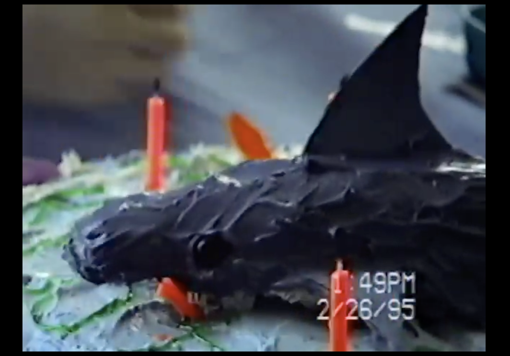

I remember the first time I saw the teaser trailer for Steven Spielberg’s A.I. Artificial Intelligence. I had only heard loosely of the project, did not grasp the Kubrick of it all, and I wasn’t expecting the teaser. There was no dialogue, just a sparse chord held over milky white as a blurred figure drifted toward the foreground, while the “His love is real, He is not” text faded in and out. Then black. In my memory, it is the darkest a movie theater has ever been (except for the deafening seconds before the Matrix Reloaded teaser premiered ahead of Attack of the Clones). Then the title assembles itself out of the dark—first a single A rendered in a liquid chrome milled to an impossible precision. The silhouette of a child steps out of the “A” to become the “I.” And finally, the “A Steven Spielberg Film” title card.
I was 12 at the time (it was sometime in late 2000), and my love and knowledge of movies had been long cemented. Spielberg was foundational to me in my younger years. My birthday cake at age 7 was Jaws-themed (my mom built a shark by frosting a hot dog bun blue). Of course I had my Jurassic Park phase (there is a stray rubber chunk of T-Rex flesh buried somewhere in my parents’ attic). And when I watched the Indiana Jones trilogy, I wore an explorer fedora for months. By the latter half of the 90s my interests had drifted elsewhere, toward things that felt more of the moment. But in the back of my mind, Spielberg was still essentially God in Hollywood.
So when the A.I. teaser appeared before me, I was certain it would be the biggest movie of all time, simply because of its vague kinship to E.T. Spielberg’s long-awaited return to initials.

But upon release, A.I. played much closer to Amistad than E.T. It opened at #1, but with only $29.4M, narrowly edging out the previous week’s surprise hit, The Fast and the Furious, before limping to $78.6M domestic. It was considered a big disappointment. (Although that’s a $57.9M opening adjusted for inflation—something to keep in mind as this coming weekend plays out.)
Steven Spielberg was never a twenty-first century director. He has made great films this century—including his best one—but he is distinctly twentieth century, and he has spent the past 25 years overshadowed by a different flavor of blockbuster. In the three years between Saving Private Ryan (1998) and A.I. (2001), the culture shifted. The movies that defined the turn of the millennium were more ironic, cynical and allergic to sincerity—The Matrix, Fight Club, American Beauty. Earnestness had become something to be ashamed of. And then Spielberg, the most earnest filmmaker alive, walked into that room with a fairy tale about a machine that just wants its mother to love him, and played it without a single wink. He didn’t adapt. He doubled down, and made the most profound and moving film of his career to a shrug.
By the time Minority Report opened a year later in June 2002, the page had fully turned. First came 9/11—a fleeting sense of unity that quickly splintered—and then the three films that would set the template for the next two decades: Harry Potter and the Sorcerer’s Stone, The Lord of the Rings, and Spider-Man—IP movies that run with or without a name above the title. There was no longer a marquee slot for a Spielberg.
As a kid, his lack of appeal baffled me at first. I thought if Minority Report had opened in 1996, it would’ve cleared $200M domestic easily. If The Terminal had opened in 1994, it could have been Forrest Gump. Instead, with the exceptions of War of the Worlds and Indiana Jones and the Kingdom of the Crystal Skull—his only two domestic blockbusters of the century, which also happen to be IP movies—his films settled into a role of semi-sophisticated side fare, the grown-up option playing two screens over from whatever was actually selling the popcorn.
He made five films in the past ten years that grossed an average of $66M domestic. The highest was Ready Player One at $137M. The Fabelmans, his last picture, was the second-lowest-grossing movie of his entire career, only ahead of The Sugarland Express, his 1974 debut.
There is an alternate reality where the return of Spielberg captures the culture. In a post-pandemic, post-streaming world where the theatrical experience feels like it’s being phased out and quality keeps giving way to quota, there was this sense that the old Goliaths would emerge, like those trees in The Two Towers, with their final passion projects—shoot them on 70mm, book them into IMAX, and we’d all show up, not just because we were clearly losing a kind of moviemaker, but because we might be losing movies. Christopher Nolan’s Oppenheimer showed us what this could look like (and to some extent, Once Upon a Time in Hollywood). For a second it felt like Scorsese’s Killers of the Flower Moon, with its own daunting runtime and IMAX rollout, could play like a real blockbuster—and then it fell drastically short. The same air of inevitability surrounded Paul Thomas Anderson’s One Battle After Another last year: surely, in a post-Letterboxd world where everyone’s a film buff now, this would be the one to finally clear $100M. It didn’t come close. (Being a box office analyst in NYC—where every IMAX showtime at AMC Lincoln Square is sold out, always—can skew your expectations.) The renaissance, it turned out, was only ever a (very coastal) feeling.
But Spielberg was never the real headliner here. Neither was the cast, nor even the aliens. The biggest draw of Disclosure Day is its title. It’s always been this way, but the culture of transparency-as-serialized-entertainment feels like it has a firmer grip on the public than ever—refreshing for the next tranche of files, the next redaction lifted, the next reckoning that’s always one news cycle away, a disclosure perpetually about to happen. Disclosure Day is another promise that the skies are about to crack open.
Spielberg’s presence helps—it lends the whole thing a sense of inevitability, of long-time-coming—but in 2026, do we trust Spielberg any more than we trust the government?
The Disclosure Day premiere happened earlier this week at Lincoln Center in NYC, the same night as Game 3 of the NBA Finals. Manhattan was particularly clogged up that evening. I happened to be walking by Lincoln Center as the SUVs pulled up and celebrities shuffled out. A group of pedestrians in Knicks jerseys paused a moment and asked me what was happening. I said “Disclosure Day premiere.” “I don’t know that,” one of them said. “The new Spielberg film,” I offered. They shrugged and went on their way.
Back in April, in our Summer Forecast, we had Disclosure Day opening to $58 million, which, if you took away his two IP movies, would be Spielberg’s biggest debut of the century. Here’s what we said exactly:
“This could play out terribly, but we suspect it will enter our consciousness as a return of Spielberg — someone who once played for the masses — and now, with rumored alien announcements from the government, it feels like people will be paying attention. With major goodwill from Project Hail Mary and Artemis II, we predict space and its many mysteries will be a welcome topic this summer. The marketing campaign just needs to sing.”
It didn’t sing. It talked… to Michelle Obama.
It’s worth mentioning the Knicks haven’t won the NBA championship since before Spielberg was making movies. They last won in 1973, the year before Spielberg made his directorial debut. A year later, in 1975, he gave us the summer blockbuster with Jaws. Between the Knicks and Spielberg, we’re predicting only one will get their twenty-first century comeback this weekend.
| 1 | Disclosure Day | $29.7M |
| 2 | Obsession | $20.5M |
| 3 | Scary Movie | $20.1M |
| 4 | Masters of the Universe | $13.2M |
| 5 | Backrooms | $12.7M |
| 6 | Michael | $5.0M |
| 7 | The Amazing Digital Circus: The Last Act | $4.9M |
| 8 | Star Wars: The Mandalorian and Grogu | $4.9M |
| 9 | The Breadwinner | $1.7M |
| 10 | Pressure | $1.5M |